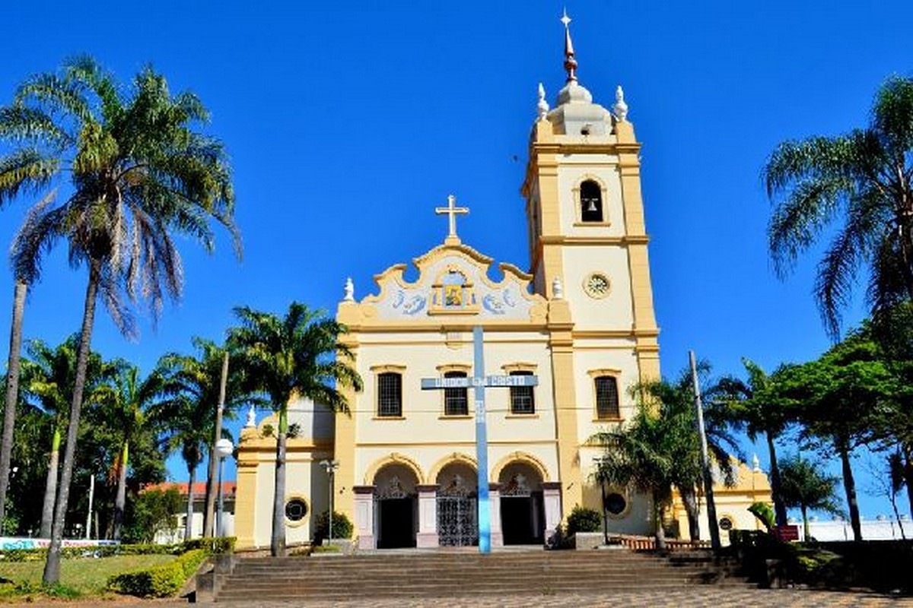

Concurso Prefeitura de São João da Boa Vista 2025
O concurso público da Prefeitura de São João da Boa Vista (SP) oferece oportunidades para níveis fundamental, médio e superior com salários atrativos e benefícios. A organização é do Instituto Nosso Rumo.

Vagas e Cargos
- Ensino Fundamental: Inspetor de Alunos – R$ 2.274,57
- Ensino Médio: Fiscal de Saúde Pública – R$ 3.028,51 | Guarda Vidas – R$ 2.251,11
- Ensino Superior: Professor de Ensino Fundamental – R$ 4.255,50 | Educação Física – R$ 4.255,50 | Agente Administrativo – R$ 2.840,00
Todos os cargos contam com auxílio-alimentação de R$ 611,16.
Remuneração e Benefícios
- Salário base: de R$ 2.274,57 a R$ 4.255,50 conforme o cargo
- Auxílio alimentação: R$ 611,16 mensais
- Jornada de trabalho: 30h a 40h semanais
Etapas do Concurso
- Prova objetiva para todos os cargos
- Prova prática apenas para o cargo de Guarda Vidas
- Análise de títulos para os cargos de Professor
Conteúdo das Provas
- Língua Portuguesa
- Matemática
- Noções de Informática (para alguns cargos)
- Conhecimentos Específicos
- Legislação e políticas públicas (educação e saúde)
- Leis Municipais e Estatuto do Servidor
Cronograma
- Publicação do edital: 16/05/2025
- Inscrições: 26/05 a 03/07/2025
- Isenção da taxa: 26/05 a 27/05/2025
- Pagamento da taxa: até 04/07/2025
- Prova objetiva: 03/08/2025
- Gabarito provisório: 04/08/2025
- Resultado provisório: 22/08/2025
- Prova prática (Guarda Vidas): 27 e/ou 28/09/2025
- Resultado final: a partir de 12/09/2025
Mais Informações
- Organizadora: Instituto Nosso Rumo
- Regime jurídico: Estatutário e celetista (temporários)
- Editais: Disponíveis no site da banca
- Validade do concurso: 2 anos, prorrogável por mais 2